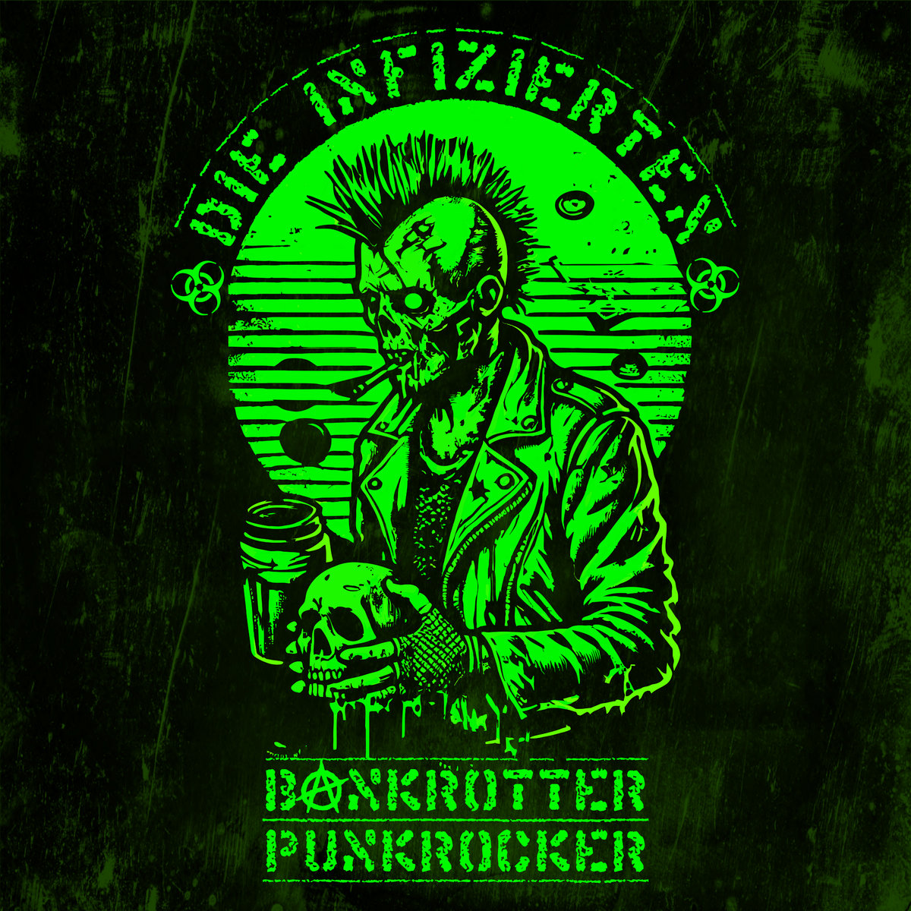

Review
DIE INFIZIERTEN - Bankrotter Punkrocker

Nach den letzten Reviews mit sauber ausgearbeiteten Songs und Musikern, die vermutlich sogar wissen, warum sie an welcher Stelle aufhören, kommen Die Infizierten.
Der Song startet nach zwei Sekunden. Bei 2:07 ist musikalisch Feierabend. Das Video läuft noch bis 2:30 weiter.
Für diese 125 Sekunden braucht „Bankrotter Punkrocker“ genau 106 Wörter. Wiederholungen, die englische Zeile und viermal „Oi“ mitgezählt.
Job weg, Wohnung weg, Kühlschrank leer, Bier alle und Geld sowieso. Sogar das Klopapier wird zum finanziellen Problem.
Mehr Gesellschaftsanalyse wird heute nicht bestellt.
Die Nummer ist extrem simpel und plump. Sie klingt aggro, rotzig und so ungeschliffen, als hätte die Band den Proberaum übersprungen und direkt auf Aufnahme gedrückt.
Bei dieser Mischung aus einfacher Gitarrenarbeit, rauer Stimme und kantigen Einsätzen muss ich an alte HASS und DAILY TERROR denken.
Handwerklich lagen viele der zuletzt besprochenen Songs sicher eine Hausnummer höher. Gerade deshalb ist dieser bodenständige Krach so erfrischend.
Hier gibt es nichts groß zu sezieren. Das Ding funktioniert gerade deshalb, weil es so schlicht ist.
106 Wörter reichen völlig.
Dann versuche ich mir das Ding live vorzustellen.
Die zahlreichen Unterbrechungen schieben die erwarteten Einsätze ständig weiter. Man holt Luft, hebt schon das Bier und liegt wieder daneben.
Leute, echt mal:
Den Scheiß kann man nicht einmal besoffen ordentlich mitgrölen.
Danach will ich wissen, ob der restliche Kram ähnlich wenig Rücksicht auf saubere Einsätze nimmt.
Zum Glück stehen mit „Fear And Loathing – Live In Budapest“ gleich fast 40 Minuten Anschauungsmaterial bereit.
Präsentiert wird die Kapelle von NRT-Records. Die möchte ich an dieser Stelle schleunigst grüßen.
Tolle Leute mit richtig schlechtem Musikgeschmack.
Bei „Bankrotter Punkrocker“ wird mir jedenfalls wieder klar, dass Punkrock doch nicht so beliebig geworden ist, wie gern behauptet wird.
Also läuft jetzt Budapest.
Fast 40 Minuten.
NRT, ihr seid schuld.
„Bankrotter Punkrocker“ auf YouTube
Die gleichnamige EP auf Bandcamp
„Fear And Loathing – Live In Budapest“ auf YouTube
NRT-Records